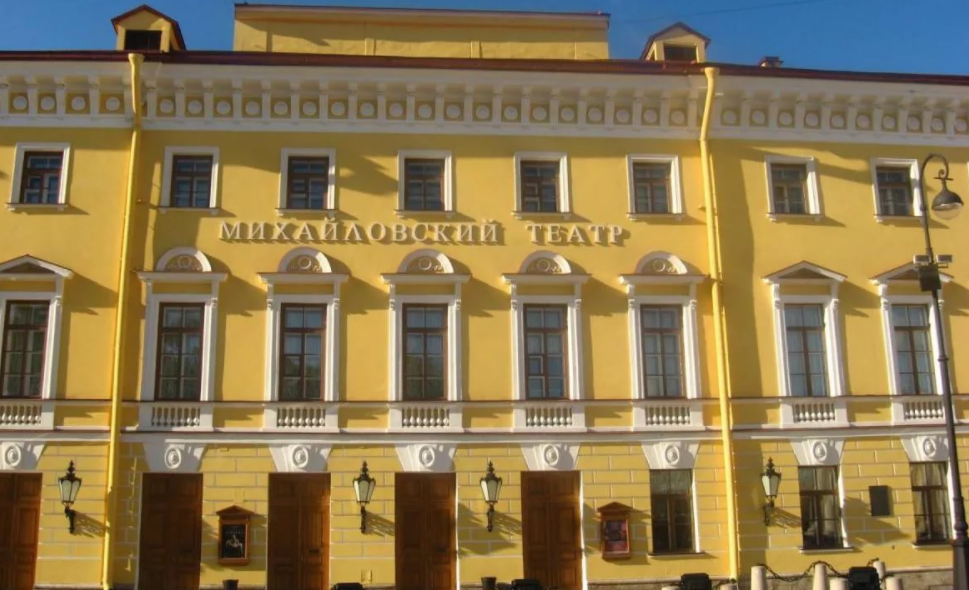
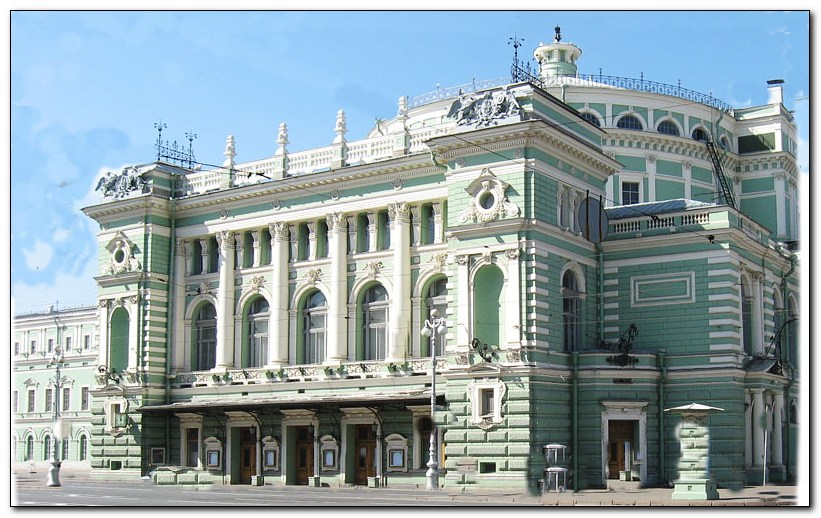

The Imperial Mikhailovsky Theatre opened in 1833 by the decree of Emperor Nicholas I.

Its name is owed to Grand Duke Mikhail, the younger son of Paul I: the Mikhailovsky Palace, located on Arts Square, served as his residence. Among those who performed on the stage of the Mikhailovsky Theatre in various years, notable figures include Johann Strauss, Matilda Kshesinskaya, Fyodor Chaliapin, and Sarah Bernhardt. Frequent attendees of the performances included Alexander Pushkin, Leo Tolstoy, and Pyotr Ilyich Tchaikovsky.
The theater was named Mariinsky in honor of the spouse of Alexander II, Empress Maria Alexandrovna. The theater opened on October 2, 1860, with Mikhail Glinka's opera "A Life for the Tsar."

Over its more than two centuries of history, the Mariinsky Theatre has given the world many great artists: great singers such as Fyodor Chaliapin, Ivan Yershov, and Sofia Preobrazhenskaya; ballet artists Anna Pavlova, Vaslav Nijinsky, Rudolf Nureyev, and Mikhail Baryshnikov.